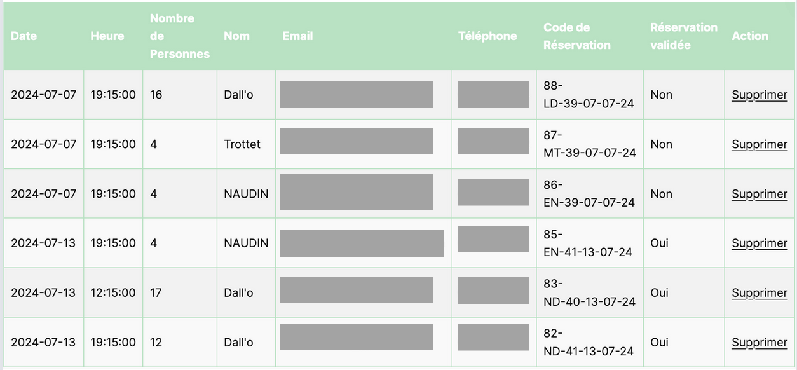
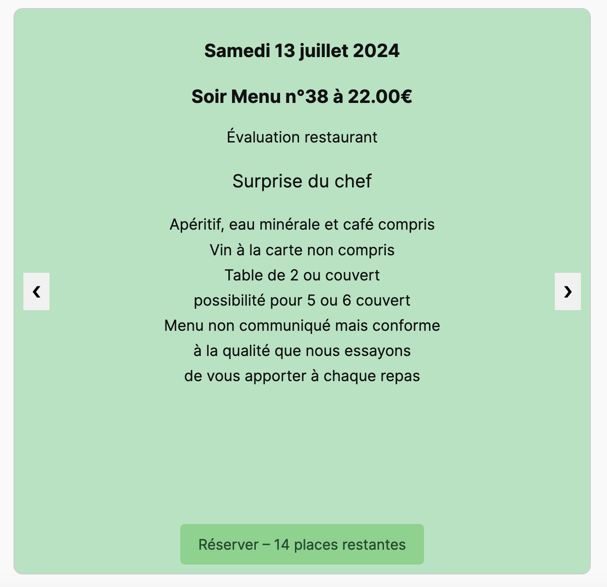

Compétence 4
Gérer des données de l’information
La consigne de mon second projet consistait à la création d'un système de réservation au sein d'un site web héberger sous Ionos et coder en PHP sous wordpress
Ce projet m'a permis de me concentrer sur deux partie de cette compétence :
Concevoir et mettre en place une base de données à partir d’un cahier des charges client
Travailler sur cela m'a permis de m'améliorer sur la création d'une base de données, et surtout sur la manière de l'interroger à travers une application, ce qui a été quelque chose avec lequel j'ai toujours eu du mal . J'ai également pu me rendre compte que dans ce domaine, il ne fallait pas toujours chercher à faire quelque chose d'extrêmement complexe, alors que parfois il suffit d'aller à l'essentiel.

Optimiser une base de données, interagir avec une application et mettre en œuvre la sécurité
Sur ce plan, j'ai pu accroître mes connaissances sur la sécurisation des bases de données ainsi que sur la manière de les organiser pour créer leur rendu au sein d'une application afin de les rendre le plus lisibles possible pour un utilisateur lambda.
